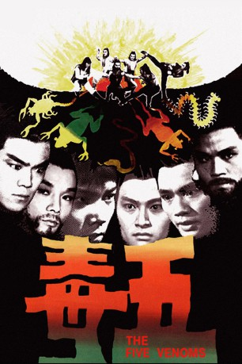

#4183 Die Unbesiegbaren Fünf
Alternativ: Five Deadly Venoms (Englischer Titel)
 
 IMDB-Wertung: 7.2 / 10
IMDB-Wertung: 7.2 / 10  Metascore: 0
Metascore: 0 
Der sterbende Meister des mächtigen Poison Clans schickt seinen letzten Schüler auf eine wichtige Mission. Er hat Angst, dass die Kampfkünste, die er unterrichtet hat, eingesetzt werden um Böses zu tun. So muss Yan Tieh losziehen um die Identität und den Aufenthaltsort der Fünf alten Schüler seinens Meisters herraus zu finden um dann zu entscheiden welchen, wenn überhaupt, er vertrauen kann.
Jahr: 1978
Dauer: 101 Minuten
FSK: 16
Land: Hong-Kong Studio: 'The 5 Deadly Venoms'Tonspuren:
Untertitel:
Auflösung: 1080p (1904x800) Größe: 2611 MB
Genre: Action
Regisseur: Cheh Chang
Drehbuch: Carl Ellsworth
Soundtrack:
Darsteller:
Datei: X:\HD-Eastern-Classic(N-Z)\Unbesiegbaren Fünf, Die (1978, FSK16, 1904x800).mkv seit 28.07.2016
Festplatte: HD Eastern+Western
 Es gibt insgesamt 61 Filme in der Gruppe 'HD-Eastern-Classic(N-Z)'
Es gibt insgesamt 61 Filme in der Gruppe 'HD-Eastern-Classic(N-Z)'